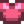

Gelees und Eingelegtes
- Für eine detaillierte Analyse des Gewinns mit dem Einmachgefäß, siehe Einmachgefäß Produktivität.
Gelees und Eingelegtes kann durch das Hinzugeben von jeweils einer Frucht oder einem Gemüse in ein Einmachgefäß hergestellt werden. Der Wert einer Einheit Gelee oder Eingelegtem ist gleich (2x Grundqualität Nutzpflanze, Wert +50). Gelees und Eingelegtes werden von der Qualität des verwendeten Obstes oder Gemüses nicht beeinflusst.
Ein Einmachgefäß benötigt zur Herstellung von Gelee oder Eingelegtem 4000 Minuten. Das sind etwa 2-3 Tage, abhängig von den Schlafphasen. [1]
| Bild | Name | Beschreibung | Herstellung | Fähigkeiten |
|---|---|---|---|---|
| Einmachgefäß | Macht aus Gemüse Eingelegtes und aus Früchten Marmelade. |
Produkte
Die Qualität der Zutaten macht keinen Unterschied für das Endprodukt. Der Wert des Endprodukts wird anhand des Basiswerts der Früchte/Gemüse berechnet. Die konservierte Version ist jedoch immer profitabler als das Goldsternprodukte selbst, obwohl die Gewinnspanne im Vergleich zu normalen Produkten geringer ist.
| Bild | Name | Beschreibung | Zutaten | Verarbeitungszeit | Verkaufspreis | Heilung |
|---|---|---|---|---|---|---|
| Eingelegtes | Ein Glas selbst eingelegtes Gemüse. | Jedes Gemüse (1) | Nicht essbar | |||
| Gelees | Wabblig. | Jede Frucht (1) | Nicht essbar |
Gelee als Geschenk
| Reaktionen der Dorfbewohner
| |
|---|---|
| Mag es | |
| Hasst es | |
Eingelegtes als Geschenk
| Reaktionen der Dorfbewohner
| |
|---|---|
| Liebt es | |
| Mag es | |
| Gefällt nicht | |
| Hasst es | |
Bündel
Gelee ist eine Option für das  Handwerker-Bündel in der Speisekammer.
Handwerker-Bündel in der Speisekammer.
Schneiderei
Gelee kann in der Spule der Nähmaschine genutzt werden, um ein T-Shirt herzustellen. 
Eingelegtes kann in der Spule der Nähmaschine genutzt werden, um ein T-Shirt herzustellen. 
Aufträge
- Gelees und Eingelegtes kann in einigen Fischteich Aufträgen benötigt werden.
Anmerkungen
- Vom Reisewagen verkaufter Gelee hat keine Fruchtsorte und einen Verkaufspreis von
 160 G.
160 G. - Vom Reisewagen verkauftes Eingelegtes hat keine Gemüsesorte und einen Verkaufspreis von 100 G.
- Die Beschreibung des Einmachgefäßes sagt, dass es Marmelade macht, obwohl es eigentlich Gelee produziert.
Referenzen
- ↑ Aus welchen Gründen auch immer, berechnet sich die Herstellungszeit unterschiedlich zwischen Schlafen und Wachsein. 1 Stunde entspricht 60 Minuten bei Wachheit, aber 100 Minuten beim Schlafen. Wenn du also einen ganzen Tag schläfst, benötigt das Gefäß 2400 Minuten. (100 * 24) Wenn du von 6:00 Uhr bis 12:00 Uhr arbeitest und dann 6 Stunden schläfst, braucht das Gefäß 1680 Minuten pro Tag. (60 * 18 + 100 * 6) Wenn du von 6:00 Uhr bis 14:00 Uhr arbeitest und 4 Stunden ohnmächtig bist, benötigt das Gefäß 1600 Minuten pro Tag. (60 * 20 + 100 * 4) Zum Beispiel braucht ein Einmachgefäß 4000 Minuten zur Arbeit. Wenn Du während des kompletten Prozesses schläfst, benötigt man 40 Stunden, also etwas weniger als 2 Tage. Wenn du 18 Stunden am Tag arbeitest dauert es 2 Tage, 10 Stunden und 40 Minuten.
Geschichte
- 1.4: Jas & Vincent hassen Gelee nicht mehr, sondern mögen es jetzt. Kann jetzt für die Schneiderei verwendet werden.